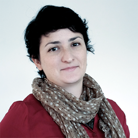

Jessica Temporal
DESENVOLVEDORA E CIENTISTA DE DADOS
Desenvolvedora e cientista de dados na Nuveo, co-fundadora do podcast brasileiro sobre ciência de dados o
Pizza de Dados, PyLady e também mantenedora do projeto Operação Serenata de Amor. Formou-se em Informática
Biomédica onde descobriu a paixão por ciência de dados analisando dados genômicos e flertando com
processamento de linguagem natural durante a graduação.

Fernando Masanori
PROFESSOR
Fernando Masanori é professor da FATEC São José dos Campos, adora dar aulas, graduado em Computação pelo
IME-USP, mestrado pelo ITA. Já desenvolveu projetos para Credicard Mastercard e Itaú BankBoston.
Nos dois últimos anos deu mais de cem palestras e minicursos, na comunidade Python, viajando pelo Brasil
e outros quinze países. É o criador do Python para Zumbis. Ministrou cursos de Raspagem de Dados para
jornalistas na Editora Abril, Folha de SP e LabJor Unicamp. E para o público geral em Maceió
(OxE Hacker Clube), Salvador (Raul Hacker Clube), São Paulo (Coletividad), Belo Horizonte, Manaus
(Coletivo Difusão), USP São Carlos, Federal de São Carlos, UDESC Joinville e Curitiba (Unipositivo).

Luciano Ramalho
CONSULTOR TÉCNICO
Este ano Luciano Ramalho completa 20 anos de trabalho com a linguagem Python. Durante esse tempo, ensinou
Python ao vivo para centenas de pessoas, colocou a linguagem em produção em alguns dos maiores sites do
Brasil, e escreveu um livro, Fluent Python (Python Fluente), publicado em 7 idiomas até agora. Luciano é
consultor técnico na ThoughtWorks, uma empresa internacional líder em engenharia de software com escritórios
no Brasil (Recife, Belo Horizonte, Porto Alegre e São Paulo) e mais 11 países.

Fernanda Campagnucci
JORNALISTA E MESTRE EM EDUCAÇÃO
Graduada em jornalismo e mestre em educação pela Universidade de São Paulo (USP), Fernanda é integrante da
carreira de Analista de Políticas Públicas e Gestão Governamental na Prefeitura de São Paulo, onde
desenvolve projetos de transparência, integridade pública e tecnologias cívicas desde 2013. Atualmente
coordena o Pátio Digital, iniciativa de governo aberto da Secretaria Municipal de Educação. É fellow de
governo aberto da Organização dos Estados Americanos e integrante da Rede de Líderes em Dados Abertos do
Open Data Institute, de Londres. Entusiasta das tecnologias livres e open source, participa de comunidades
como a PyLadies, que promovem a diversidade no universo da tecnologia.